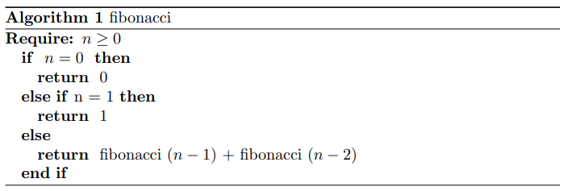

La sucesión de Fibonacci Fn 0 si n = 0 ; 1 si n = 1 ; Fn−1 + Fn−2 si n ≥ 2 . Fue presentada en oriente por Leonardo de Pisa cerca del añoo 1202. Sin embargo, fue descubierta antes por matem´aticos hind`ues. Existen muchas propiedades y aplicaciones en teoría de números juegos como también en computación. A modo de ejemplo, estos números con ciertas restricciones son el peor caso del algoritmo de Euclides -cuyo análisis es muy complicado-.
Comúnmente en computación cuando se presentan mecanismos para calcular un número de Fibonacci se mencionan tres algoritmos. En primer lugar uno recursivo que sale de la definición, luego uno iterativo de orden n y por último otro recursivo que utiliza técnicas de divide and conquer que es de orden log n.
